Kei Kishimoto
Resume
Case Study
MedGrocer
BusyBee App
Contact Me
Resume
Case Study
MedGrocer
BusyBee App
Contact Me
UX Case Study
BusyBee To-Do
Web and Application
BusyBee To-Do offers solution for enterprise as well as multi-national companies that aim to automate their day-to-day tasks and track progress.
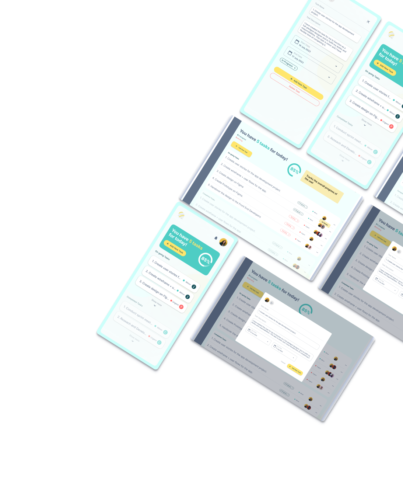
Design Process
User Persona + Empathy Map
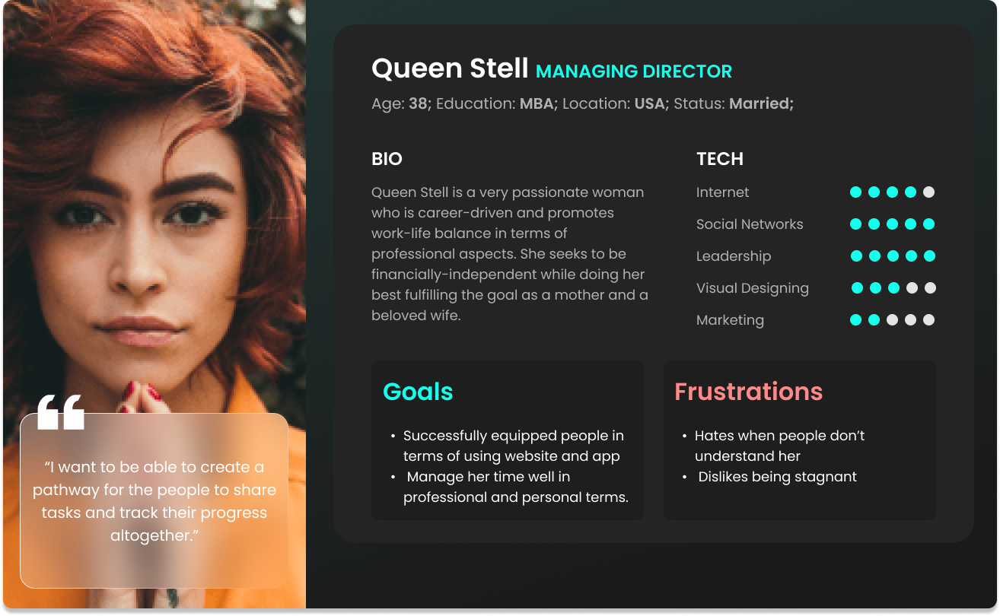 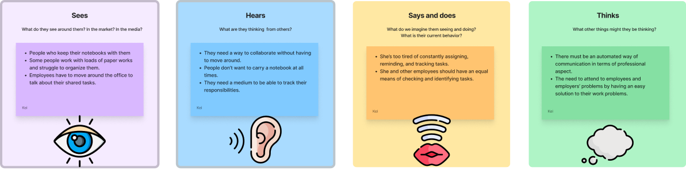
User Journey
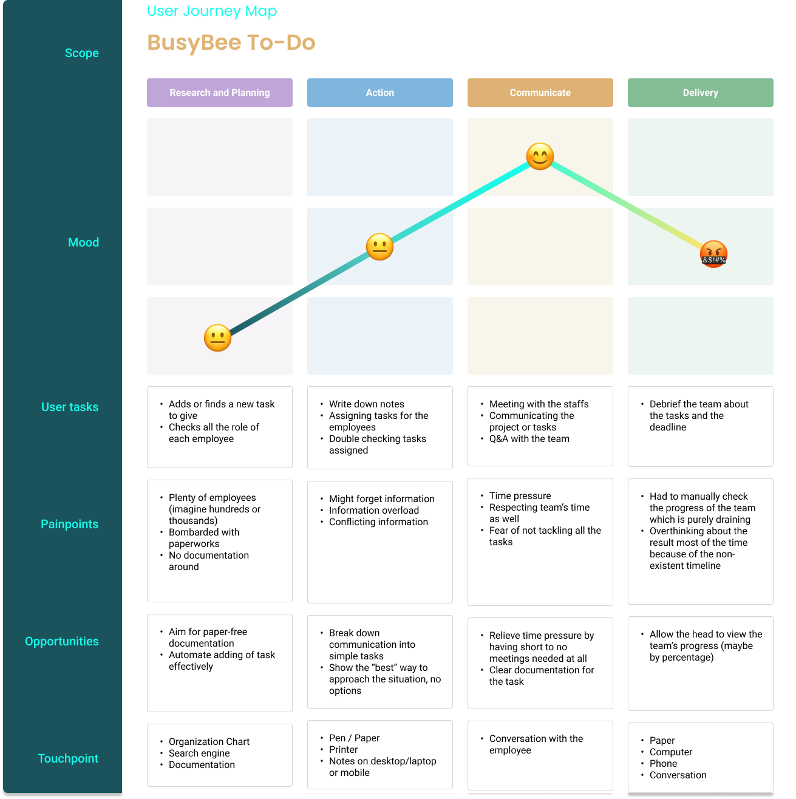
Wireframe
User Stories
(P9) As a user, I want to be able to add to-do lists so that I can track my productivity and feel satisfied for the day.
(P7) As a user, I want to manage and see my progress so that I can feel motivated of my tasks
(P6) As a user, I want to be able to see my completed tasks so that I can feel happy with my productivity
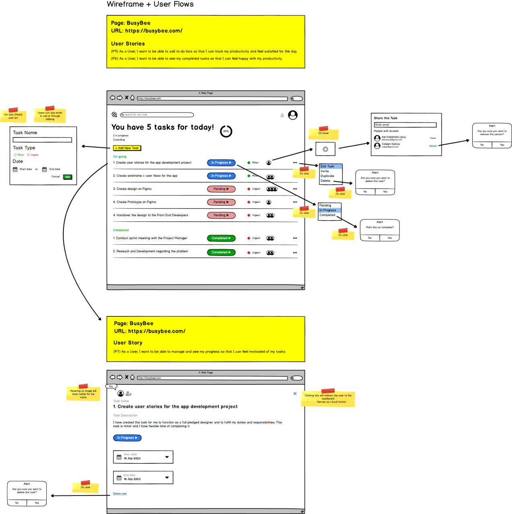 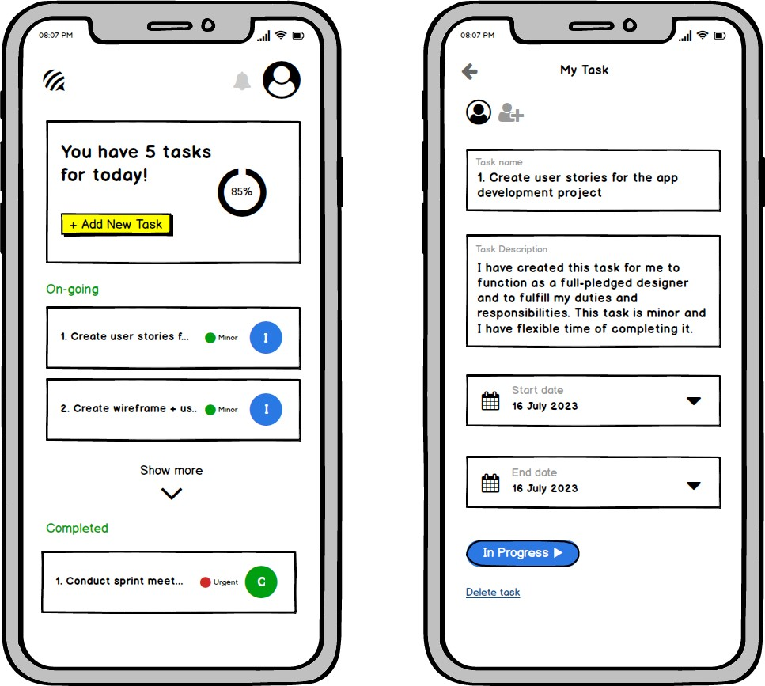
Mock Up (Prototype)
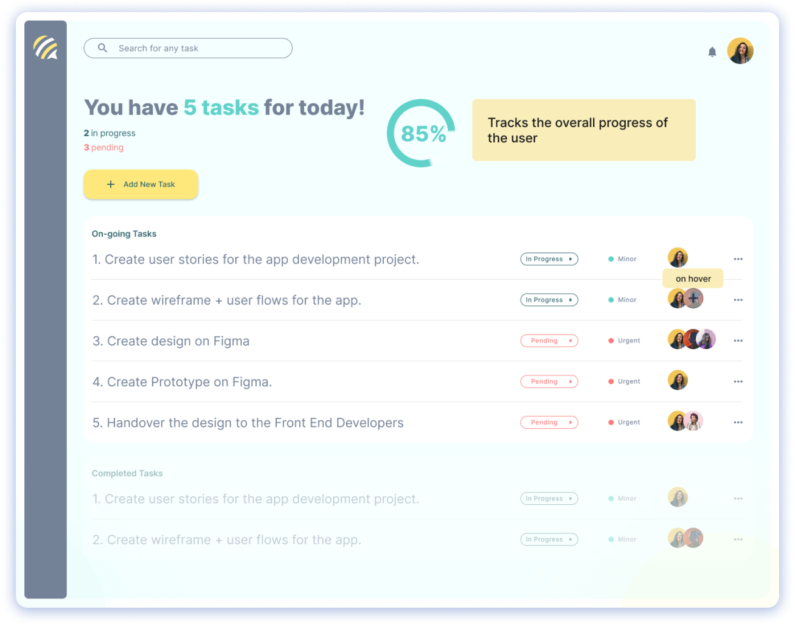 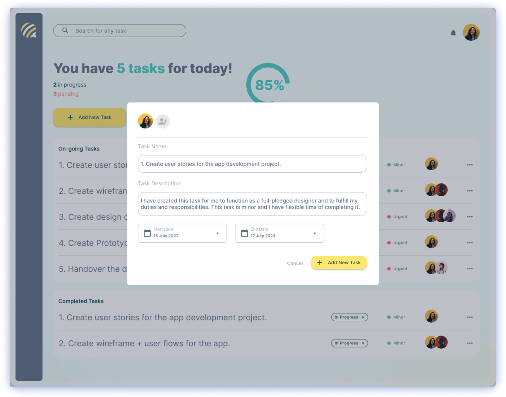 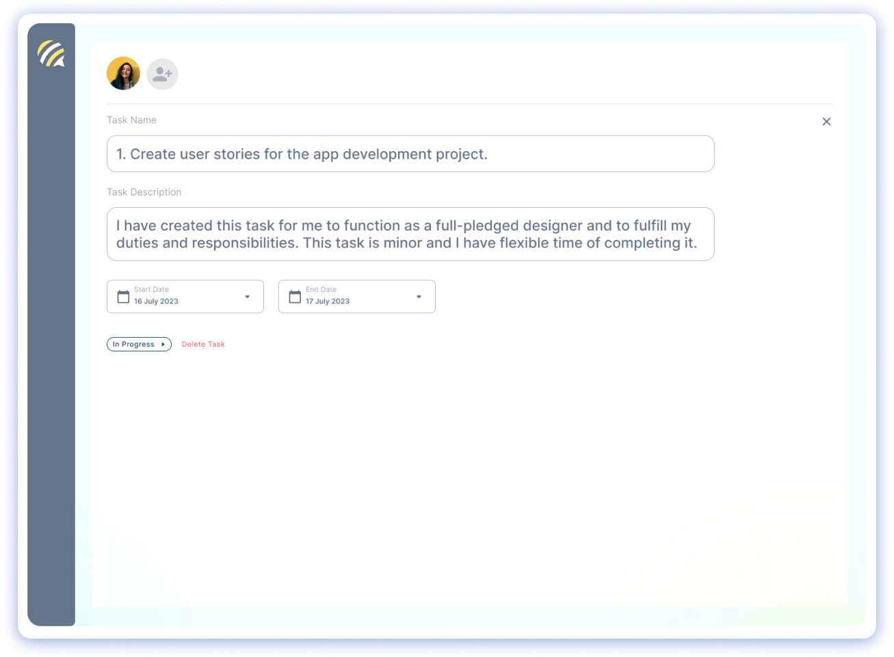 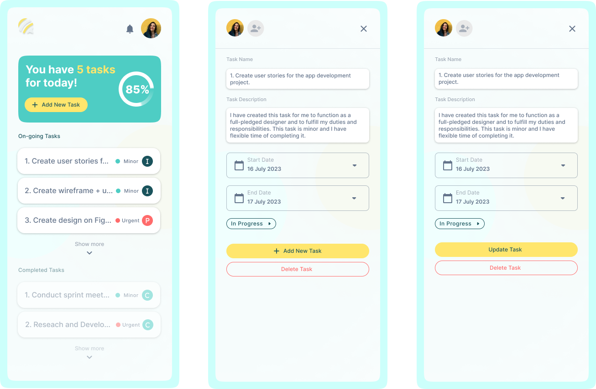 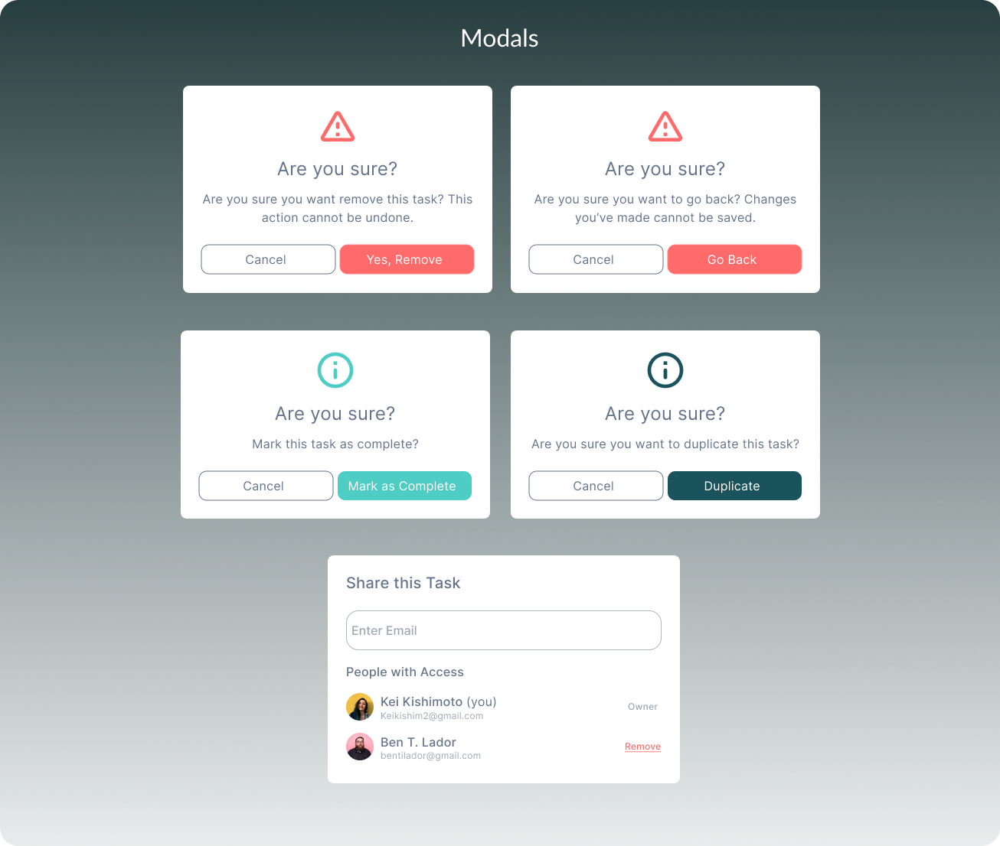
and Many More Screens... Thank you for watching!
❮ Home